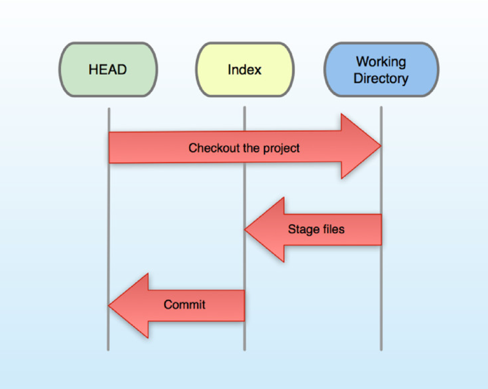
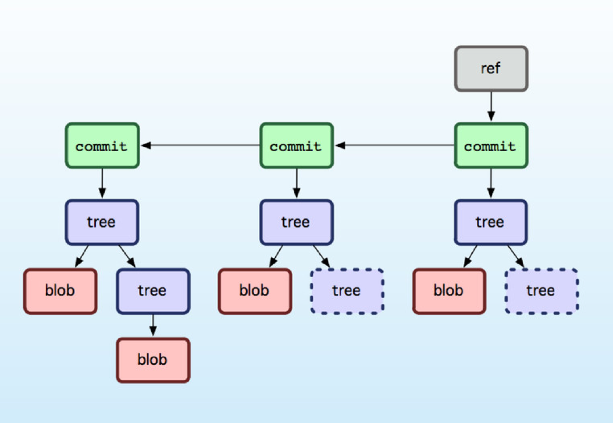
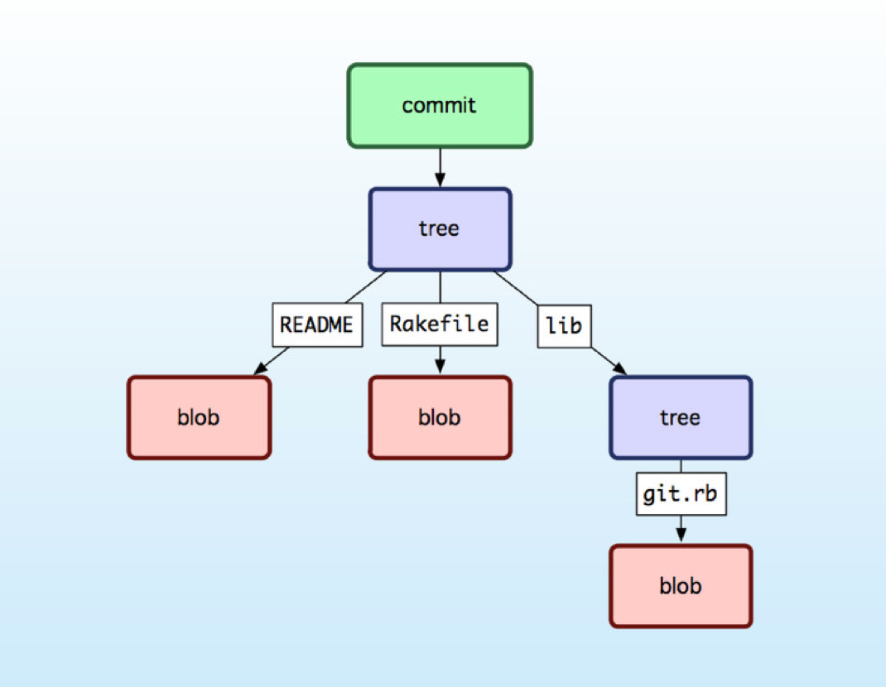
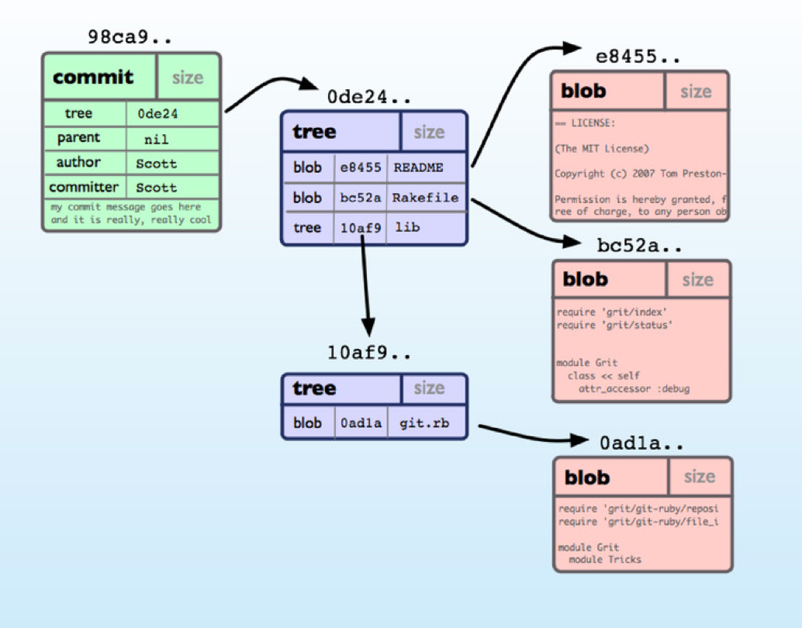
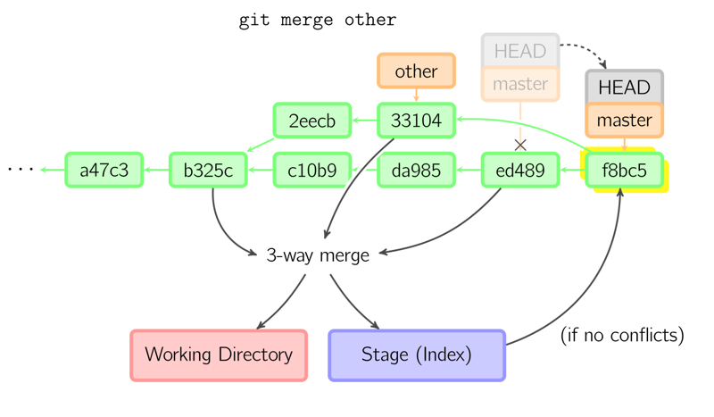
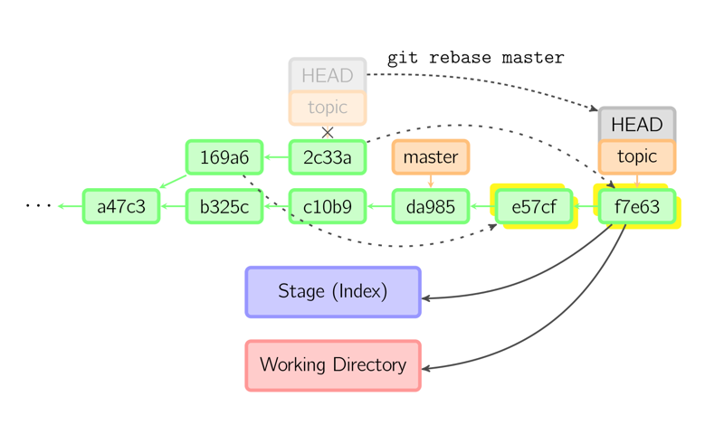

| z, ? | toggle help (this) |
| space, → | next slide |
| shift-space, ← | previous slide |
| d | toggle debug mode |
| ## <ret> | go to slide # |
| c, t | table of contents (vi) |
| f | toggle footer |
| g | toggle follow |
| r | reload slides |
| n | toggle notes |
| p | run preshow |
| P | toggle pause |
| s | choose style |
POLL audience
POLL: Anyone used Git?
Built by Linus Torvalds
no network: diff / history / commit / merge / old versions / switching branches / etc
$ git config --global user.name "Your Name"
$ git config --global user.email "you@example.com" $ mkdir thinger
$ cd thinger
$ git initcreated the .git directory
graphics stolen from Scott Chacon, githubber / training




$ touch boring_homework_1.txt
$ git status $ git add boring_homework_1.txt
$ git status $ git reset
$ git status $ git add boring_homework_1.txt
$ git commit
$ git status $ git log
$ git show <SHA1>SHA1 or shortened / describe ref
$ git rm boring_homework_1.txt
$ git statusonly staged, not committed
$ git reset
$ git status $ git checkout boring_homework_1.txt
$ git status $ git rm boring_homework_1.txt
$ git commit
$ git status $ <editor> boring_homework_2.txt
$ git status $ git stash
$ git statuswatch out for untracked files! git add first
$ git stash pop
$ git status $ git diff $ git branch $ git checkout -b other
$ git branchcheckout basically means move HEAD
$ git checkout master

$ git merge other
$ git log
$ git log --graph --pretty=oneline --decorate --abbrev-commit $ git branch -D other $ git clone https://bitbucket.org/
shawn_42/git_workshop.git $ mkdir git_workshop; cd git_workshop
$ git init
$ git remote add origin https://bitbucket.org/
shawn_42/git_workshop.git
$ git fetch origin
$ git checkout master $ git checkout -b feature_x
$ git push -u origin feature_x $ git pull $ git push origin --delete otherOther clones will maintain any local branches